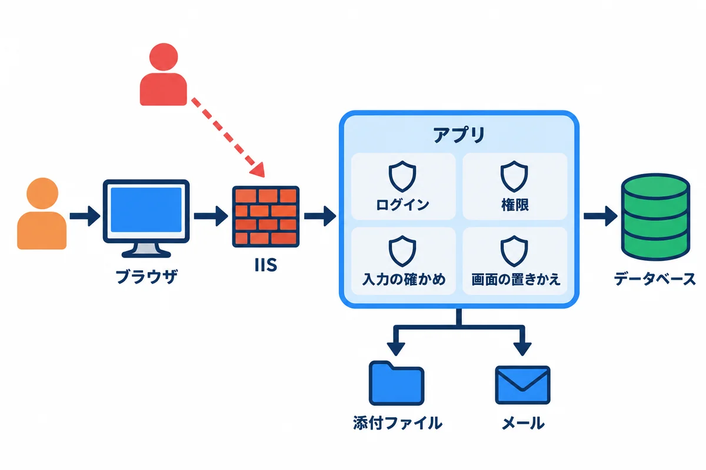
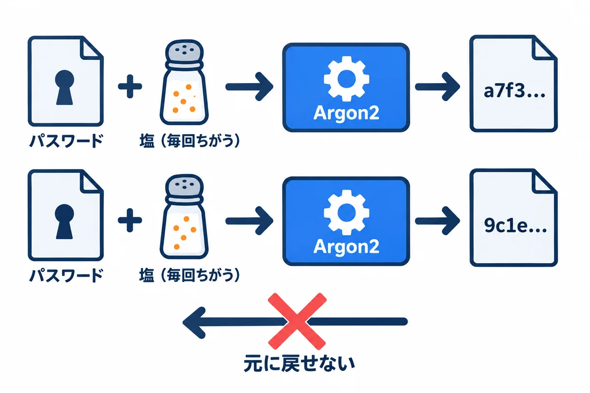
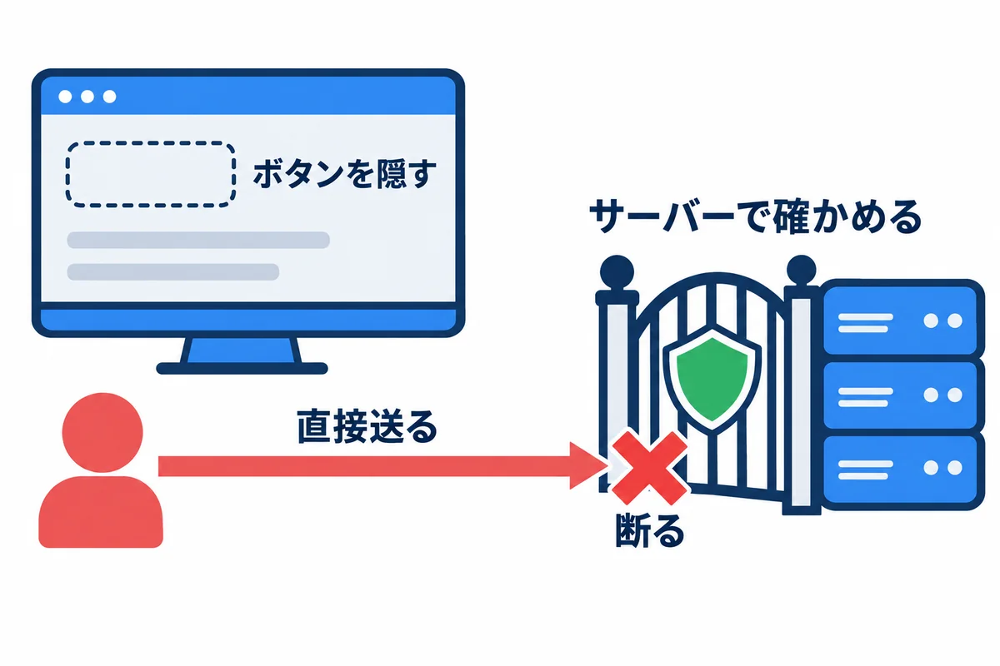
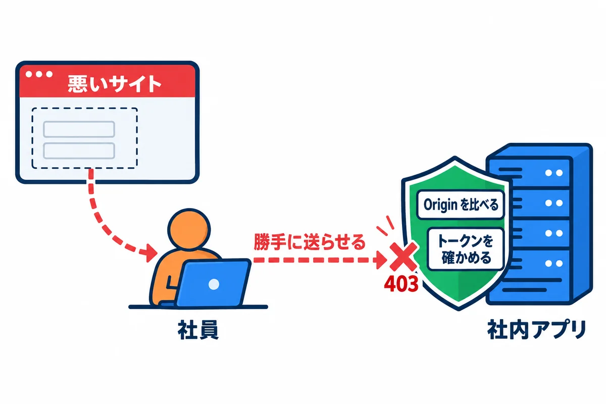
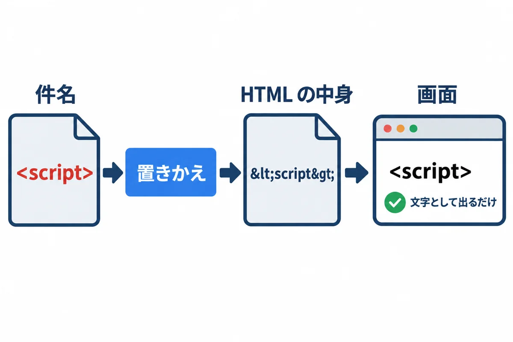
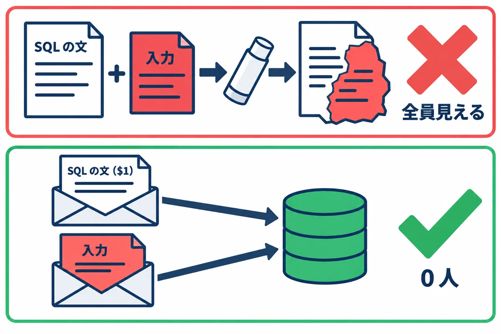
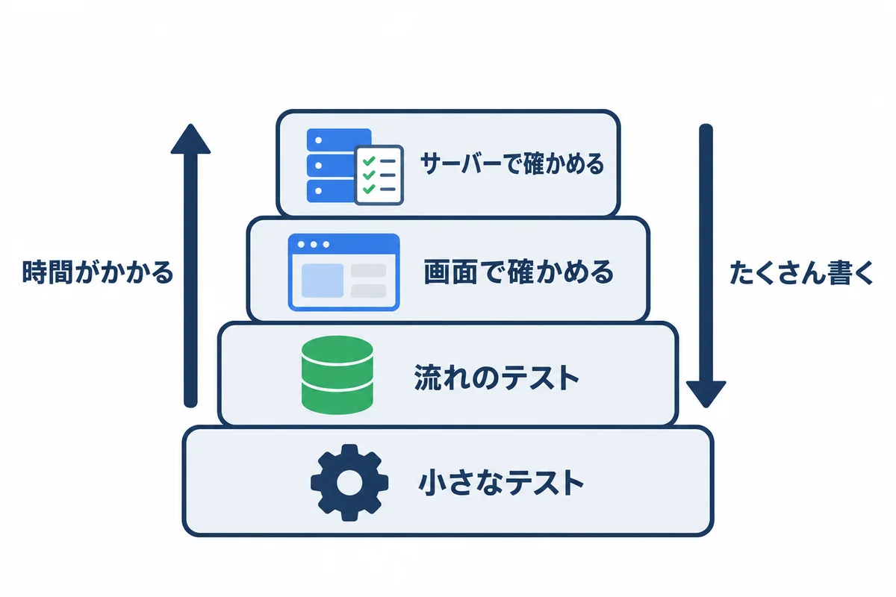

色の付いた枠のコードの、右上の「コピー」ボタンを押してください。コピーしたら、ブラウザーの「戻る」で PDF に戻れます。
06（Django＋React）と 08（Topcoat）の練習アプリに入れてきた安全の仕組みを、1 か所にまとめます。この巻の特徴は、説明するだけでなく、実際に攻めてみて、断られることを確かめることです。
curl や psql のコマンドは、それぞれのアプリを動かした PowerShell とは別の窓で打ちます。
| 章 | 守る物 | 主な攻め方 | 06 Django | 08 Topcoat |
|---|---|---|---|---|
| 1 | 通信 | 盗み見 | HTTP（社内）。HTTPS は参考の資料 | 同じ |
| 2 | パスワード | データベースを盗まれる | PBKDF2 | Argon2 |
| 3 | ログイン | クッキーを盗む・使い回す | Django のセッション | Topcoat のセッション＋自分の表 |
| 4 | 権限 | ボタンが無い操作を、直接送る | _visible_requests・services.py |
load_visible・workflow.rs |
| 5 | フォームの送信 | CSRF | CSRF トークン | Origin と Host を比べる |
| 6 | 画面 | XSS | React が置きかえる | view! が置きかえる |
| 7 | 入力 | 改行などを混ぜる | validate_title |
FormValues::validate |
| 8 | データベース | SQL インジェクション | ORM | $1 と .bind() |
| 9 | ファイル | にせの中身・場所の書きかえ | 先頭の数バイト・乱数の名前 | 同じ |
| 10 | 承認の URL | 推測・使い回し | 32 バイトの乱数・指紋だけ保存 | 同じ |
| 11 | メール | ヘッダー インジェクション | BadHeaderError で断る |
件名の中に閉じこめる |
| 12 | 秘密 | Git や画面から漏れる | dev.env を Git に入れない |
.env を Git に入れない |
Secure を戻す など）は、onprem/参考_HTTPSにする場合.md にまとめてあります。
2 つのアプリが、データベースに入れているパスワードを、実際に見ました（練習用の社員は、全員が同じパスワード practice-pass-2026）。
08 Topcoat（employees.password_hash）:
employee_no | name | password_hash
-------------+-----------+---------------------------------------------------------------------------------------------------
012345 | 山田 太郎 | $argon2id$v=19$m=19456,t=2,p=1$6eyNlSGqndcuzM2d11Wkig$hbEDQazl7jVUSCx+CiSCMKkEOrNPaoROc5wvI+BiA8Y
012346 | 佐藤 花子 | $argon2id$v=19$m=19456,t=2,p=1$toz5KcyB0B8QVQ4IgutSPQ$VHM9+aEqbFUkpCa2CKpJJmFz238MygepohBKnmo0rkM
06 Django（accounts_user.password）:
employee_no | name | password
-------------+-----------+-------------------------------------------------------------------------------------------
012345 | 山田 太郎 | pbkdf2_sha256$1000000$VaLA4QWiCi7y9ZejmSObzH$JAndWXp23h/K67EJk3CqZfYcafMgU0YGMVobhJfyIGY=
012346 | 佐藤 花子 | pbkdf2_sha256$1000000$IqXU8Aj4U6pTNnuRek28ua$oxS79nAV3xH7ks87gJ/FMKW20KhwNkHaLTloj1FPe8Y=
| 部分 | 意味 |
|---|---|
$argon2id$v=19$m=19456,t=2,p=1$ |
Argon2id という作り方と、その重さ（使うメモリー・くり返しの数） |
pbkdf2_sha256$1000000$ |
PBKDF2 という作り方で、100 万回くり返す（Django の決まり） |
| その次の部分 | 塩（salt）。人ごと・毎回ちがう乱数 |
| 最後の部分 | ハッシュ（元に戻せない値） |
この巻の準備で、08 のデータベースを見たところ、練習用の社員 5 人の password_hash が、全部同じ文字（塩も同じ）でした。原因は、seed-demo のコマンドが、ハッシュを 1 回だけ作って、5 人に使い回していたことです。
// 直す前（src/cli.rs の seed_demo）
let hash = auth::hash_password(DEMO_PASSWORD.to_string()).await; // 1 回だけ作る
for (no, name, dept, title, role) in DEMO_PEOPLE {
// … 5 人とも、同じ hash を入れていた
}
練習用のデータとはいえ、「同じパスワードの人が、ハッシュを見るだけで分かる」形です。1 人ずつ作るように直しました（2.1 の出力は、直した後の物）。本物の社員のパスワードは set-password で 1 人ずつ作るので、この問題はありませんでした。
学ぶこと: 安全の仕組みは、正しい部品を使うだけでなく、使い方でも壊れます。データベースの中身を、実際に見て確かめることが大事です。
src/auth.rs（08）の一部:
/// パスワードをハッシュにする。わざと重い計算なので、別のスレッドで動かす（ほかの人の画面を止めない）
pub async fn hash_password(password: String) -> String {
tokio::task::spawn_blocking(move || hash_password_blocking(&password)).await.expect("ハッシュの計算が止まりました")
}
fn hash_password_blocking(password: &str) -> String {
// 塩（salt）は、毎回ちがう乱数を Argon2 が自分で作り、結果の文字列の中に入れる
Argon2::default().hash_password(password.as_bytes()).expect("ハッシュにできません").to_string()
}
/// パスワードが合っているか。合っていなければ false
pub async fn verify_password(password: String, hash: String) -> bool {
tokio::task::spawn_blocking(move || {
let Ok(parsed) = PasswordHash::new(&hash) else { return false };
Argon2::default().verify_password(password.as_bytes(), &parsed).is_ok()
})
.await
.unwrap_or(false)
}
/// 社員がいないときにも、同じ重さの確かめをするための、にせのハッシュ。
/// 「いない社員は早く断られる」と、時間の差で社員番号を探られてしまうので、それを防ぐ
static DUMMY_HASH: LazyLock<String> = LazyLock::new(|| hash_password_blocking("dummy-password-for-timing"));
08 で、実際に試しました。
### 1. ログインしたクッキーで一覧を開く
200
### 2. ログアウトする
303 http://localhost:3000/login
### 3. ログアウトの前に写しておいたクッキーで、もう一度開く
303 http://localhost:3000/login
### 4. 鈴木さんのセッションの期限を、データベースで過去にする
UPDATE 2
### 5. 鈴木さんのクッキーで開く
303 http://localhost:3000/login
| 確かめたこと | 結果 | 仕組み |
|---|---|---|
| ログアウトの前に写しておいたクッキーを、あとで使う | ログインの画面へ（303） | ログアウトで、データベースの記録（sessions）を消すので、古いクッキーは使えない |
| 期限（最後に使ってから 60 分）を過ぎたクッキー | ログインの画面へ（303） | 記録の expires_at を過ぎた物は、使わない |
HttpOnly を付けます。画面の JavaScript から読めないので、6 章の XSS が万一あっても、クッキーを盗まれにくくなります。
画面に「引き戻す」のボタンが出ない人でも、ブラウザの開発者ツールや curl を使えば、ボタンを押したときと同じ送信を、直接できます。08 で、実際にやってみました（ボタンの出ない人が、/requests/{id}/action に直接送った）。
| した人 | したこと | 状態コード | 出た文 |
|---|---|---|---|
| 佐藤さん（依頼 7 の回覧者） | 山田さんの依頼 7 を引き戻す | 400 | 自分の依頼ではありません。 |
| 鈴木さん（依頼 7 に関係ない） | 山田さんの依頼 7 を引き戻す | 404 | （依頼があることも知らせない） |
| 山田さん（一般） | 依頼 2 の担当になる | 400 | 担当者だけができます。 |
| 山田さん（一般） | 管理者だけの「送り直す」 | 400 | この操作はできません。 |
実際の出力（curl で送り、状態コードと、画面の間違いの文を取り出した）:
### 佐藤さん（回覧者）が、山田さんの依頼 7 を引き戻そうとする
→ 400 自分の依頼ではありません。
### 鈴木さん（関係ない人）が、山田さんの依頼 7 を引き戻そうとする
→ 404
### 山田さん（一般）が、依頼 2 の担当になろうとする
→ 400 担当者だけができます。
### 山田さん（一般）が、管理者だけの「送り直す」をする
→ 400 この操作はできません。
workflow.rs、06 の services.py）。画面のボタンを出し分けるのは、使いやすさのためで、守りではありません。08 の src/app/requests/id.rs:
/// 見てよい依頼を読む。無い・見てはいけないときは、どちらも 404（あるかどうかも知らせない）
pub(crate) async fn load_visible(cx: &Cx, user: &Employee, id: i64) -> Result<FullRequest> {
let full = queries::find_request(&state(cx).pool, id).await?.ok_or_not_found()?;
if !full.visible_to(user) {
return Err(not_found().into());
}
Ok(full)
}
06 の workflow/api.py:
def _visible_requests(user):
"""その人が見てよい依頼: 自分が出した・回覧に入っている・担当者と管理者は全部"""
qs = Request.objects.select_related("requester", "assignee").prefetch_related("steps__approver")
if user.role in (User.Role.WORKER, User.Role.ADMIN):
return qs
return qs.filter(Q(requester=user) | Q(steps__approver=user)).distinct()

社員がログインしたまま、悪いサイトのページを開くと、そのページが社員のブラウザを使って、社内アプリへフォームを送らせることができます（クッキーは、ブラウザが自動で付けてしまう）。これを CSRF と言います。
06 Django: CSRF トークン（ページを開いたときに配る、推測できない札）が付いていない送信を断ります。Django のテストの道具で、札の確かめを有効にして試した結果:
CSRF トークンなしでログイン: 403
CSRF トークンありでログイン: 200
ログイン後、トークンなしで依頼を出す: 403 {"detail":"CSRF Failed: CSRF token missing."}
08 Topcoat: ブラウザが付ける Origin（どのサイトのページから送ったか）と、宛先の Host を比べます。Origin: http://evil.example を付けて送った結果（08 後編の 10 章）:
HTTP/1.1 403 Forbidden
content-type: text/plain; charset=utf-8
content-length: 9
date: Sun, 01 Nov 2026 16:10:23 GMT
forbidden
SameSite=Lax も、ほかのサイトからの POST にクッキーを付けさせない、もう 1 つの守りです。
は、HTMLの中では<script>に置きかえられ、画面には\が、そのまま文字として出ている" style="width: 100%;">view! の (式) は、< を < に、> を > に置きかえて出します。ブラウザは、それを文字として出すだけで、スクリプトとしては動かしません。renderToStaticMarkup で HTML にした）:1. {title} で出す:
<td><b>太字</b><script>alert('xss')</script></td>
2. dangerouslySetInnerHTML で出す（使ってはいけない例）:
<td><b>太字</b><script>alert('xss')</script></td>
{title} は置きかえます。dangerouslySetInnerHTML（名前のとおり「危ない」）を使うと、置きかえずにそのまま出し、スクリプトが動く形になります。この資料のアプリでは使っていません。innerHTML ではなく textContent を使います（08 の drawing.js）。件名の入力欄は 1 行なので、画面からは改行を入れられません。しかし、細工した送信なら入れられます。06 で、件名に「改行＋Bcc:」を入れて、依頼の API に直接送ってみました。
直す前:
状態コード: 500
依頼の数: 7 → 8
そのときのログ（最後の行）:
django.core.mail.message.BadHeaderError: Header values can't contain newlines (got '【依頼・承認】承認のお願い: 治具の製作\r\nBcc: evil@example.com' for header 'Subject')
BadHeaderError で送るのを断ります（メールのヘッダーを増やす攻撃を防ぐため。11 章）。そこは正しい動きです。件名に改行などの制御文字が入っていたら、入力の確かめで断るようにしました。
06 の workflow/serializers.py:
def validate_title(self, value: str) -> str:
value = value.strip()
if not value:
raise serializers.ValidationError("件名を入れてください。")
# 改行などの制御文字は断る。メールの件名に入ると、保存できてもメールを送れなくなる（10 の巻）
if any(unicodedata.category(c) == "Cc" for c in value):
raise serializers.ValidationError("件名に、改行などは入れられません。")
return value
08 の src/request_form.rs（08 のメールの部品は、改行を件名の中に閉じこめるので、メールは壊れない（11 章）。それでも、入れる理由の無い文字は、入り口で断る）:
pub fn validate(&self) -> std::result::Result<RequestInput, Vec<String>> {
let mut errors = Vec::new();
let title = self.title.trim().to_string();
if title.is_empty() {
errors.push("件名を入れてください。".to_string());
} else if title.chars().count() > 100 {
errors.push("件名は 100 文字までです。".to_string());
} else if title.chars().any(char::is_control) {
// 入力欄は 1 行だが、細工した送信なら改行を入れられる。メールの件名などに入れさせない（10 の巻）
errors.push("件名に、改行などは入れられません。".to_string());
}
直した後に、同じ送信をした結果（06）:
状態コード: 400 {"title":["件名に、改行などは入れられません。"]}
依頼の数: 7 → 7
確かめること: 400 で断られ、依頼の数は増えない。06 の test_件名に改行は入れられない・08 の 件名に改行は入れられない のテストを足したので、あとで誰かが確かめを消すと、テストが失敗して気付けます。
学ぶこと: 確かめは「画面でできること」ではなく、「送ろうと思えば送れること」に合わせます。そして、入り口（入力の確かめ）で断るのが、いちばん安全で分かりやすい直し方です。

PostgreSQL の上で、同じ入力（' OR '1'='1）を、2 つのやり方で使ってみました。流した SQL（psql で -f で流した）:
\echo '--- 1. 社員番号を、文字としてつないだ SQL（だめな例）。入力: '' OR ''1''=''1'
SELECT count(*) AS 見つかった数 FROM employees WHERE employee_no = '' OR '1'='1';
\echo '--- 2. 社員番号を、$1 で別に渡した SQL（アプリのやり方）。入力は同じ'
PREPARE find_employee(text) AS SELECT count(*) AS 見つかった数 FROM employees WHERE employee_no = $1;
EXECUTE find_employee(''' OR ''1''=''1');
\echo '--- 3. 正しい社員番号を、$1 で渡す'
EXECUTE find_employee('012345');
結果（行数の表示は省いた）:
--- 1. 社員番号を、文字としてつないだ SQL（だめな例）。入力: ' OR '1'='1
見つかった数
--------------
7
--- 2. 社員番号を、$1 で別に渡した SQL（アプリのやり方）。入力は同じ
見つかった数
--------------
0
--- 3. 正しい社員番号を、$1 で渡す
見つかった数
--------------
1
WHERE employee_no = '' OR '1'='1' という、別の意味の文になり、7 人全員が見つかりました。ログインの確かめでこれが起きると、パスワードを知らなくても入れてしまいます。$1 で別に渡したので、「' OR '1'='1 という社員番号の人」を探し、0 人でした。.bind() で渡し、組み立てた SQL の文字をそのまま渡すとコンパイルのエラーにします（08 前編の 6.5）。06 の Django の ORM（filter(...)）も、中で値を別に渡します。SQL の文を、+ や format! や f 文字列で組み立てて、値を入れることはしません。| 攻め方 | 守り | 確かめた所 |
|---|---|---|
拡張子を .png に変えた、別の種類のファイル |
中身の先頭の数バイトでも確かめる | 08 後編の 5.2 の画面・06 の test_拡張子と中身が違うファイルは断る |
..\..\Windows\evil.png のような名前で、別のフォルダに書かせる |
フォルダに置く名前は、アプリが乱数で決める | 08 の ファイル名で別のフォルダに書かせない（12 章） |
| 大きなファイルで、サーバーのメモリーを使い切らせる | 大きさの上限（IIS・アプリ） | 08 後編の 5.3・10 章（413） |
| ダウンロードしたファイルを、ブラウザに HTML として開かせる | Content-Disposition: attachment・X-Content-Type-Options: nosniff |
08 後編の 8.2 |
| 見てはいけない依頼の添付ファイルを開く | その依頼を見てよいかを確かめる | 08 後編の 8.2 |
| 決まり | 理由 | 確かめるテスト（08 / 06） |
|---|---|---|
| 32 バイト（256 ビット）の乱数 | 推測できない | — |
| データベースには指紋（SHA-256）だけ | データベースを見られても、URL を作れない | — |
| 14 日で使えなくなる | 古いメールが、あとから使われない | 期限が切れたurlは使えない |
| 1 回しか使えない | 転送されたメールで、2 回目の承認をさせない | urlは1回しか使えない |
| 引き戻し・差し戻しで、待っている人の URL を取り消す | 進まない依頼の URL を残さない | 引き戻すと承認待ちの人のurlが使えなくなる |
| 送り直すと、前の URL は使えない | 古い URL を無効にする | 毎朝の通知は止まっている承認を送り直す |
| 同時に 2 回押しても 1 回だけ | 二重の承認を防ぐ | 同時に2回押しても1回だけ進む（08） |
メールの件名に「改行＋Bcc: evil@example.com」を入れると、部品によっては、ヘッダーが 1 行増えて、だれかに勝手に写しを送れてしまいます。2 つの部品の振る舞いを、実際に確かめました。
06 Django: 送るのを断る。
BadHeaderError: Header values can't contain newlines (got '【依頼・承認】承認のお願い: 治具の製作\r\nBcc: evil@example.com' for header 'Subject')
08 Topcoat（lettre）: 送れるが、改行を件名の中に閉じこめる（Bcc: は件名の文字の一部として符号化され、新しいヘッダーにならない）。作られたメールのヘッダー:
From: noreply@example.com
To: sato@example.com
Subject: =?utf-8?b?44CQ5L6d6aC844O75om/6KqN44CR5om/6KqN44Gu44GK6aGY44GE?=
=?utf-8?b?OiDmsrvlhbfjga7oo73kvZwNCkJjYzo=?= evil@example.com
Message-ID: <TnQXFIPdeN1NMBVzFuyaowDMSjWDjaV4a01q@（パソコンの名前）>
MIME-Version: 1.0
Date: Sun, 01 Nov 2026 16:34:45 +0000
Content-Type: text/plain; charset=utf-8
Content-Transfer-Encoding: base64
=?utf-8?b?…DQpCY2M6?= の中に、改行と Bcc: が入っています。$ git check-ignore -v （秘密が入るファイル）
webapp_learning/samples/08_topcoat_app/webapp/.gitignore:2:.env webapp_learning/samples/08_topcoat_app/webapp/.env
webapp_learning/samples/06_django_react/.gitignore:4:dev.env webapp_learning/samples/06_django_react/backend/dev.env
webapp_learning/samples/09_mail/.gitignore:2:*.pem webapp_learning/samples/09_mail/key.pem
$ git ls-files（Git に入っている、秘密の入りそうな名前のファイル）
（なし）
| 秘密 | 置く所 | してはいけないこと |
|---|---|---|
| データベースのパスワード（開発） | .env（08）・dev.env（06）。Git に入れない |
資料やチャットに貼る |
| データベースのパスワード（サーバー） | WinSW の XML。フォルダの権限で守る（onprem の 04 の 7 章） | 共有のフォルダに写しを置く |
| 社員のパスワード | 本人が決める。管理者は set-password（標準入力から読む） |
コマンドの引数に書く（履歴に残る） |
| 承認の URL・セッションのトークン | 指紋だけをデータベースへ | ログに、そのまま書く |
| 練習用の証明書の鍵（09） | *.pem。Git に入れない |
本物のサーバーで使う |

| 段 | 何を確かめるか | この資料では |
|---|---|---|
| 小さなテスト | 1 つの関数（データベースを使わない） | 08: src/ の中の 12 個・tests/security.rs の 3 個 |
| 流れのテスト | 依頼の流れ全体（データベースを使う） | 06: workflow/tests.py の 18 個／08: tests/workflow.rs の 16 個 |
| 画面で確かめる | 本物のブラウザで操作する | 06 後編・08 後編の画面の写し |
| サーバーで確かめる | 本物の設定・ネットワーク・メール | onprem のチェック表・09 の 9 章 |
samples/08_topcoat_app/webapp/tests/security.rs:
//! 安全のためのテスト（10 の巻）。データベースは使わない
use topcoat::{context::Cx, mail::mail};
use webapp::{drawing, upload};
/// 件名に改行を入れて、ヘッダーを増やそうとする（ヘッダー インジェクション）。
/// メールの部品が、改行を「ヘッダーの区切り」として扱わないことを確かめる
#[tokio::test]
async fn 件名に改行を入れても_ヘッダーは増えない() {
// 依頼の件名は社員が入れる。悪い人が、件名に「改行＋Bcc:」を入れたとする
let title = "治具の製作\r\nBcc: evil@example.com";
let m = mail! {
from: "noreply@example.com",
to: "sato@example.com",
subject: format!("【依頼・承認】承認のお願い: {title}"),
text: "本文",
}
.expect("メールを作れる");
assert!(m.bcc().is_empty());
let raw = String::from_utf8(m.formatted(&Cx::default()).expect("形にできる")).unwrap();
// 改行のあとの「Bcc:」が、本物のヘッダーの行になっていない
assert!(!raw.contains("\r\nBcc:"), "Bcc のヘッダーが足されてしまった:\n{raw}");
}
/// 図面の文字に、HTML や script を入れても、図面の形として読めるだけ（画面では文字として出る）
#[test]
fn 図面の文字にscriptを入れても_ただの文字() {
let d = drawing::parse(
r#"{"version":1,"widthMm":297,"heightMm":210,"shapes":[{"kind":"text","x":1,"y":1,"text":"<script>alert(1)</script>"}]}"#,
)
.unwrap()
.unwrap();
assert!(matches!(&d.shapes[0], drawing::Shape::Text { text, .. } if text == "<script>alert(1)</script>"));
}
/// 送られてきた名前に「..\」などが入っていても、フォルダに置く名前には使わない
#[tokio::test]
async fn ファイル名で別のフォルダに書かせない() {
let mut random = [0u8; 8];
getrandom::fill(&mut random).unwrap();
let dir = std::env::temp_dir().join(format!("webapp-sec-{}", hex::encode(random)));
let file = upload::UploadedFile { name: r"..\..\Windows\evil.png".into(), bytes: b"\x89PNG\r\n\x1a\n....".to_vec() };
let saved = upload::save(&dir, &file).await.unwrap();
// 置いた名前は、アプリが決めた乱数の名前（32 文字の 16 進＋.png）
assert_eq!(saved.stored_name.len(), 32 + ".png".len());
assert!(saved.stored_name.chars().all(|c| c.is_ascii_hexdigit() || c == '.' || c.is_ascii_lowercase()));
assert!(dir.join("attachments").join(&saved.stored_name).exists());
let _ = std::fs::remove_dir_all(&dir);
}
08（cargo test）:
Running unittests src\lib.rs (target\debug\deps\webapp-8c86094e59d42b38.exe)
test drawing::tests::空なら図面なし ... ok
test drawing::tests::四角と線を読める ... ok
test drawing::tests::知らない図形はエラー ... ok
test employees::tests::shift_jisは断る ... ok
test files::tests::日本語の名前は_xxの形にする ... ok
test upload::tests::中身がpdfならpdfとして通る ... ok
test request_form::tests::正しい入力は通る ... ok
test request_form::tests::件名に改行は入れられない ... ok
test employees::tests::間違いのあるcsvは全部の間違いを返す ... ok
test employees::tests::正しいcsvを読める ... ok
test upload::tests::場所ごとの名前は最後だけにする ... ok
test upload::tests::拡張子をpngに変えたexeは断る ... ok
test result: ok. 12 passed; 0 failed; 0 ignored; 0 measured; 0 filtered out; finished in 0.00s
Running unittests src\main.rs (target\debug\deps\webapp-729cf1be2339cc29.exe)
test result: ok. 0 passed; 0 failed; 0 ignored; 0 measured; 0 filtered out; finished in 0.00s
Running tests\security.rs (target\debug\deps\security-eafc82bc57e25215.exe)
test 図面の文字にscriptを入れても_ただの文字 ... ok
test 件名に改行を入れても_ヘッダーは増えない ... ok
test ファイル名で別のフォルダに書かせない ... ok
test result: ok. 3 passed; 0 failed; 0 ignored; 0 measured; 0 filtered out; finished in 0.00s
Running tests\workflow.rs (target\debug\deps\workflow-e585d0fc1d21207c.exe)
test ほかの人の依頼は引き戻せない ... ok
test urlは1回しか使えない ... ok
test 回覧者の決まり ... ok
test 出し直すと最初の回覧者からやり直す ... ok
test 引き戻すと承認待ちの人のurlが使えなくなる ... ok
test 全員が承認すると回覧完了になり担当者に知らせる ... ok
test 出すと1人目にメールが届き回覧中になる ... ok
test 同時に2回押しても1回だけ進む ... ok
test 検証ではメールの宛先を書きかえる ... ok
test 担当を決めて完了にすると依頼者に知らせる ... ok
test 差し戻すとコメントが追記され依頼者にメールが届く ... ok
test 期限が切れたurlは使えない ... ok
test 添付ファイルはフォルダに置き_失敗したら消す ... ok
test 理由の無い差し戻しは断る ... ok
test 毎朝の通知は8時を過ぎてから1日1回だけ動く ... ok
test 毎朝の通知は止まっている承認を送り直す ... ok
test result: ok. 16 passed; 0 failed; 0 ignored; 0 measured; 0 filtered out; finished in 2.65s
test result: ok. 0 passed; 0 failed; 0 ignored; 0 measured; 0 filtered out; finished in 0.00s
06（.\dev.ps1 test --noinput の最後の所）:
Ran 18 tests in 55.856s
OK
サーバーへ出す（更新する）前に、毎回確かめます。
| # | 確かめること | 06 | 08 |
|---|---|---|---|
| 1 | 自動のテストが全部通る | .\dev.ps1 test |
cargo test |
| 2 | コンパイルの警告・指摘が無い | — | cargo clippy --all-targets |
| 3 | Django の安全の確かめで、問題が出ない | check --deploy が System check identified no issues (4 silenced).（HTTP のために止めた 4 つだけ。onprem の 05） |
— |
| 4 | DEBUG が本番で false |
DJANGO_DEBUG=false |
APP_ENV=production |
| 5 | 秘密が Git に入っていない | git ls-files で dev.env が無い |
.env が無い |
| 6 | 検証のサーバーは MAIL_REDIRECT_TO 付き |
XML を見る | 無いと起動しない |
| 7 | IIS が Host をそのまま渡す |
— | preserveHostHeader（onprem の 04 の 8.3） |
| 8 | 部品の版を固定し、記録している | requirements.txt・wheelhouse |
Cargo.toml の =・Cargo.lock |
| 9 | 部品の弱さの知らせ（セキュリティの更新）を見た | Django・DRF などの更新の案内 | Topcoat・sqlx などの更新の案内 |
| 10 | 更新の前に、データベースのバックアップがある | onprem の 04 の 11 章 | 同じ |
| 失敗 | 何が起きるか | 正しいやり方 |
|---|---|---|
| ボタンを隠しただけで、サーバーで確かめない | 直接送られて、操作されてしまう | 4 章 |
| GET で状態を変える | リンクや画像だけで操作され、CSRF の守りも効かない | 状態を変えるのは POST だけ |
dangerouslySetInnerHTML・innerHTML で出す |
XSS | 6 章 |
| SQL を文字でつなぐ | SQL インジェクション | 8 章 |
| 送られてきたファイル名で保存する | 別のフォルダに書かれる | 9 章 |
| 「画面では入れられない」から確かめない | 細工した送信で、思わぬ所が壊れる | 7 章 |
| パスワードのハッシュを使い回す・自分で作る | 同じパスワードが分かる・弱い | 部品に 1 人ずつ作らせる（2 章） |
| 証明書の確かめを止める | にせの相手に送ってしまう | 09 の 5.2 |
| 秘密を Git に入れる | 履歴から消せない（消したつもりでも残る） | 12 章。入れてしまったら、パスワードを変える |
LIKE を使うとき、入力をどう渡せば安全ですか。% や _ が入力に入っていたら、どうなりますか。sessions の表）。/requests/{id}/edit を開く」を足して、08 で試してください。何が起きますか。security.rs に、「ログアウトした後の古いクッキーは使えない」テストを足すには、何が要りますか（データベース・ルーター）。| 用語 | 意味 | 出てくる所 |
|---|---|---|
| ハッシュ・塩（salt） | 元に戻せない値と、それを人ごとに変える乱数 | 2 |
| PBKDF2・Argon2 | パスワードのハッシュの作り方（わざと重い） | 2 |
| セッション・トークン | ログインを続ける仕組みと、その札 | 3 |
| 権限（認可） | だれが、何をしてよいか | 4 |
| CSRF | ほかのサイトから、勝手に送らせる攻撃 | 5 |
| XSS | 画面に、スクリプトを動かされる攻撃 | 6 |
| 制御文字 | 改行・タブなど、目に見えない特別な文字 | 7 |
| SQL インジェクション | 入力が、SQL の一部として動いてしまう攻撃 | 8 |
| ヘッダー インジェクション | 改行を混ぜて、メールのヘッダーを増やす攻撃 | 11 |
| テストの段 | 小さなテストから、サーバーでの確かめまでの積み上げ | 13 |